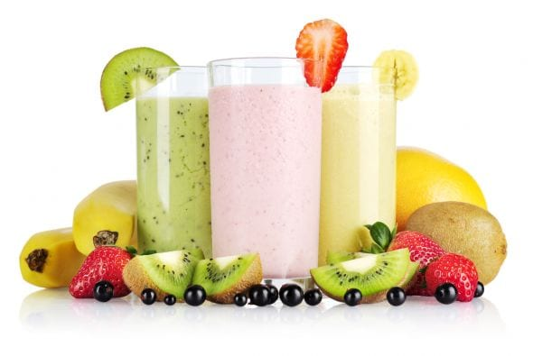

En otros países (Venezuela por ejemplo) a este tipo de preparación se le da el nombre de batido cuando es elaborado sólo con agua y/o hielo picado; mientras que los preparados con leche son llamados "merengadas". Las frutas más comunes en esta preparación suelen ser: melón, papaya (lechosa), ananá (piña), sandía (patilla), fresa, maracuyá (parchita), etc. También es muy popular el llamado "3 en 1", el cual es una combinación de zumo de naranja con zanahoria y remolacha roja (betarraga).
